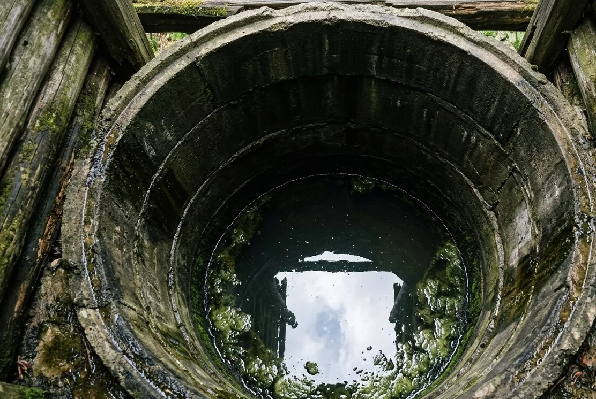

Вода из скважины
Железо, жёсткость, марганец, запах и другие показатели – только после анализа.
Открыть страницу →Не нужно заранее разбираться в аэрации, смолах и клапанах. Начните с источника воды или бытового симптома – дальше объясним, что проверить и какие классы решений бывают.
Источник задаёт вероятные риски и программу анализа, но не заменяет лабораторные показатели.
Железо, жёсткость, марганец, запах и другие показатели – только после анализа.
Открыть страницу →
Сезонность, мутность, органика, нитраты и микробиологические показатели.
Открыть страницу →
Ржавчина из труб, запах, жёсткость и отдельная питьевая доочистка.
Открыть страницу →Внешний признак помогает начать диагностику, но одна и та же жалоба может иметь несколько причин.

Рыжие потёки, желтизна после отстаивания, металлический привкус.
Открыть страницу →
Белый налёт, накипь, белая пыль от увлажнителя.
Открыть страницу →
Тухлые яйца, болото, железо или запах только горячей воды.
Открыть страницу →
Песок, глина, взвесь, осадок или цветность.
Открыть страницу →
Невидимый риск, который подтверждается микробиологическим анализом.
Открыть страницу →
Тёмный или чёрный осадок – возможная, но не единственная причина.
Открыть страницу →
Чайный оттенок, болотный запах, сезонные изменения.
Открыть страницу →
Не видны и не пахнут: обнаруживаются только анализом.
Открыть страницу →Начните с того, что знаете точно – откуда идёт вода. Страница источника подскажет, какие показатели обычно проверяют и что собрать в исходных данных. Если беспокоит конкретный бытовой признак – рыжие потёки, налёт, запах – заходите со стороны проблемы. Оба входа приводят к одному шагу: анализу и расчёту расхода.
Страница источника отвечает на вопрос, откуда вода и что в такой воде вообще встречается. Страница проблемы разбирает один признак: почему он появляется, какие показатели за ним стоят и какими методами это закрывают. Обычно человек заходит с проблемы, а перед подбором всё равно возвращается к источнику.
Читайте всё, что подходит под описание, но не собирайте решение из трёх отдельных фильтров. Несколько признаков одновременно – это чаще одна общая схема из нескольких ступеней. Порядок ступеней там важнее, чем сам набор.
Раздел помогает сузить круг и понять, что проверять в лаборатории. Диагноз по цвету, запаху или фотографии не ставим: один и тот же признак бывает у разных причин, а часть загрязнений не видна и не пахнет вообще.
Тогда быстрее идти сразу в каталог, там всё разложено по классам оборудования. Раздел решений нужен на шаг раньше – когда есть жалоба на воду, но ещё нет ответа, каким методом её закрывать.
Опишите сразу несколько симптомов или приложите анализ. Специалист должен отделить наблюдение от лабораторного факта.
Сначала зафиксируем источник и симптомы. Для точного решения понадобятся анализ и параметры дома.